Design the decision form
For event organisersNot an organiser?
The decision form questions create the columns in the decision table. As well as key data, there will be fields where data can be entered by the administrators or committee members.#
Go to Event dashboard → Abstract Management → Decisions → Form & Setup
Skip to The default questions
Skip to Adding a question
Skip to Deleting a question
Skip to Restoring a deleted question
Skip to Changing the order of questions
The default Decision Form will be displayed with the current default questions.
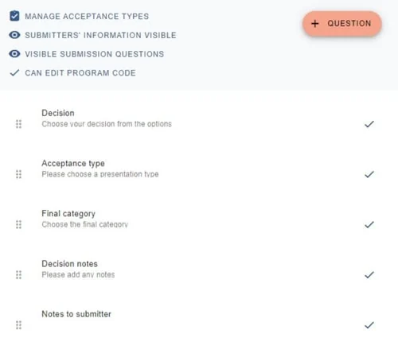
At the top, before the questions, there are four key settings
Manage acceptance types: Click to create decisions such as accepted for poster, oral etc.
Submitters' information: Toggle on or off to enable or disable the visibility of submitters' name and email address.
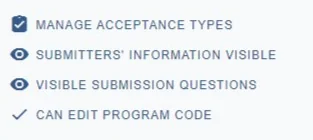
Visible submission questions: Set the visibility of each question by clicking on the eye icon next to each question.
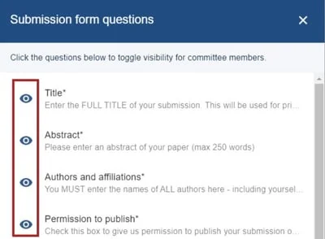
The final setting allows you to enable and disable the permissions for committee members to edit the program code (see Recording a decision.)
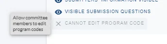
The default questions
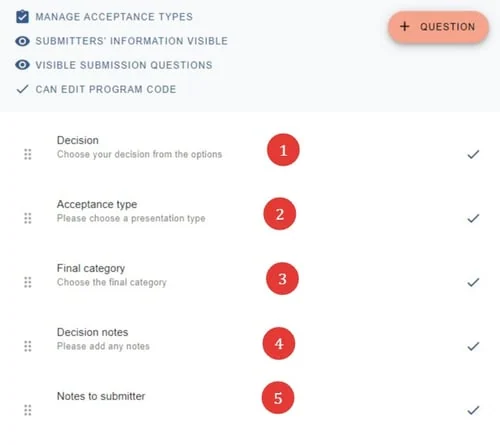
1) Decision - the options here are not editable.
2) Acceptance type - the options here are determined by acceptance types.
3) Final Category - options are determined by the categories entered in theCategory question in the Submission form
4) Decision Notes - data entered here will only be viewed by admin.
5) Notes to submitter - data captured here can be shown to submitters via merge fields in emails.
Display settings
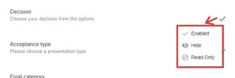
The display settings are also available on each question:
Enabled- Committee can edit responses / enter data
Hide- Committee won't see the question
Read only - Committee can read the responses, but not edit.
Adding a question
You can add a new question to the review form by clicking + Question then choosing the relevant question type from the list.
If you are on the Free Plan you cannot add any questions to the decision form.
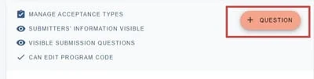
There are three options -Checkbox, Dropdown, Numerical input, Text input
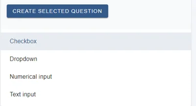
Checkbox will look like this in the decisions table. Click the option, then the Create selected question button.
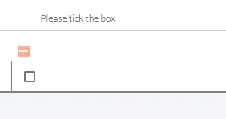
The dropdown question provides a choice of options, as below.
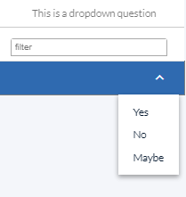
A Numericalinput**question would provide a field to enter a number.
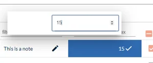
A Textinput**question would provide a field for text input.
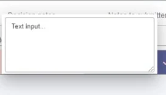
Deleting a question
Click on the relevant question then click Delete Question in right hand corner of window.
NB - this option is only available to those questions that can be deleted. eg decision notes, notes to submitter.
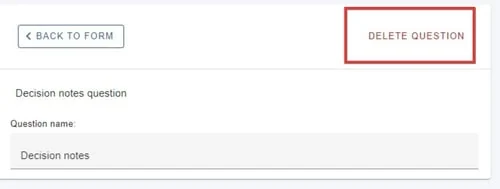
Restoring a Deleted Question
If you delete a question but would then like to restore it, go to your Decision Form & Setup page, under the +Question Button, click on View Deleted Questions
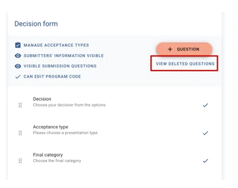
On the pop-up screen, click on the question you wish to reinstate, and it will now be back on the form.
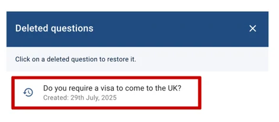
Changing the order of questions
You can drag and drop the questions to change their order
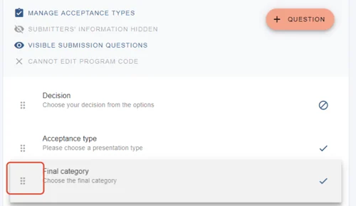

Common questions#
I want to add another decision type - 'rework' - how do I do this?#
See Acceptance types
Acceptance types#
When going through the decision making process, you will first need to decide on the acceptance type - ie oral, poster etc.#
Go to Event dashboard → Abstract Management → Decisions → Form & Setup
Click on Manage Acceptance Types at the top of the form.
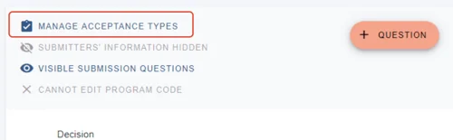
You can 1) Overwrite the default options,
2) delete any, and
3) enter a new acceptance type and click the + button.
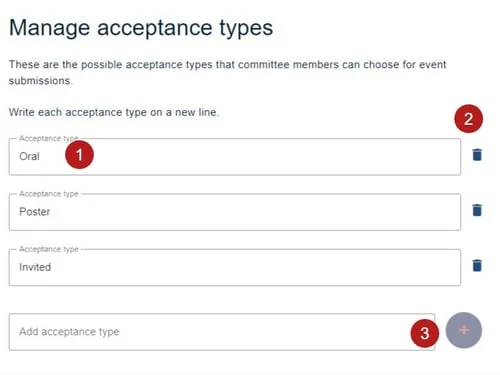
Changes are saved automatically.
These will now appear in the Decisions column in the Decisions Table as below.
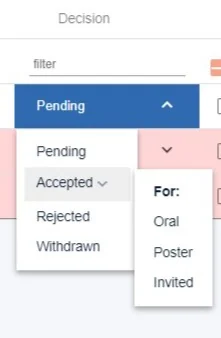

Didn't solve it? Ask our support team
No question is too small, and there's no charge for asking. Raise a ticket and someone who knows the software will pick it up.
Did this page solve it?
Thanks — this helps us fix it.